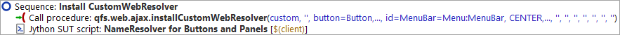

| Version 6.0.3 |
Addressing subitems of complex components like lists, tables or trees via index, as described in the previous section, is only possible because of a suitable component mapping in the 'Setup'. That way, QF-Test knows in what way certain functionalities like text fields, buttons, checkboxes, data tables, trees etc. have been implemented in the HTML code of the application.
Knowing the functionality of a component at recording time has the following advantages:
Last but not least, the additional information QF-Test is able to gather, knowing the functionality of the component, will contribute towards the stability of the tests.
Configuration of the component recognition is required because Web applications have a
limited set of basic components, which can be combined in flexible ways in order to
implement complex components and designs. HTML tables, for example, are used,
both, for just controlling the page layout and for displaying logical tables, like the
VehicleTable. Without additional information, QF-Test cannot know where exactly the layout
table ends and the logical table starts. This is why, without mapping, QF-Test would record
something like VehicleTable.td for a table cell. The "td" coming from the
HTML table data element "TD" and indicating a table cell, but nothing more. QF-Test would not able to assign
a logical table row or column.
In the 'Setup' of the demo suite FirstWebTests.qft of the first chapter
or the one created via the quickstart wizard in the second chapter the component mapping
is done right after the start of the browser.
The following figure shows the resolver registration node in the
FirstWebTests.qft with some configuration parameters.
|
|  | ||
|
| Figure 13.2: Web resolvers as installed in the FirstWebTests.qft | ||
The parameters inform QF-Test which HTML element contains the data table und which HTML elements would be the data row and the data cell, among other mappings. The configuration was done specifically for the WebCarConfigurator.
Note At this stage it is just important for you to know about the option to improve component recognition by the use of resolvers.
QF-Test automatically analyses the structure of web applications, detects the most common web UI toolkits (like Angular, ExtJS, GWT, SmartGWT, Vaadin,...) and installs the respective predefined resolvers.
Obviously, not all web applications have been developed using a toolkit, some use extended toolkits and not all existent toolkits have predefined resolvers with QF-Test. Hence you may come across custom component implementations.
So when you start testing your own web application and encounter issues with components not being accessed as reliably as expected, there might be the time to at least think about a resolver to improve the recognition behavior. Please get in touch with our support (support@qfs.de) then for assistance.
There is also a chapter in the technical reference part of the manual with more in-depth information about CustomWebResolvers and how to start an implementation on your own if you wish to do so.
| Last update: 9/6/2022 Copyright © 2002-2022 Quality First Software GmbH |